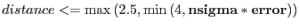
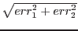
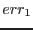
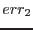

In order to produce the merged source-list from all the individual input source-list files, omsrclistcomb first produces a list of all the input sources sorted into order of decreasing source significance. To decrease the CPU time taken in the matching process, the distance (d) between two sources is computed from their equatorial-rectangulr coordinates (x, y and z), using the following formulae:
The equatorial coordinates are only computed once.
In order to deal with source-position errors that may be underestimated, and don't in fact take into account ``offsets'' between the coordinates in the different files, each source is assigned a new error based on the following:
For each source in the list omsrclistcomb then tries to find a counterpart from the other sources in the list, excluding sources from the same source-list file from where the current source originated. Two sources are considered to ``matched'' if the distance between them satisfies the following:
 arcsecs
where error is computed from the formula , where  and  are the errors in the two source positions and nsigma is the input parameter (default value=3). The matching algorithm may find several possible ``matches'' and will select the closest.